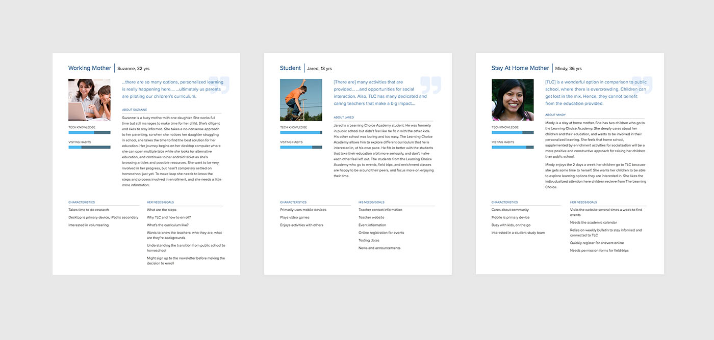
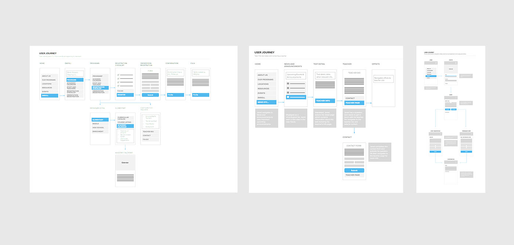

Work with me
I am currently looking for a full time position - either remote or in the Sacramento, CA area. Let's chat!
Follow me


The Learning Choice Academy—a San Diego public charter home–school, came to us for an update to their website that was outdated and buggy. The goal of the project was to create an experience that promotes an engaging atmosphere, while providing a sense of safety, information about the charter homeschool experience, and motivating students to succeed.
I worked as the primary designer on the project. I worked with 1 other designer who assisted in design/project management and a developer.
To learn more about TLC's specific needs, and to set goals for the user experience design we conducted qualitative research. We conducted phone interviews and administered a survey via Survey Monkey via their current website. We interviewed 12 stakeholders including staff and teachers. We collected 42 survey responses and heard from parents, teachers, and students.
From our stakeholder interviews we learned that they used the site for
From our survey we learned that users were on the website for
From our research we put together 3 different user personas.
From these personas we identified 3 possible user journeys.
Our research helped define the most important pages of TLC's website; The ones we would spend the most time on in the design phase.
Overall, the website redesign improved site navigation and discoverability. The design allowed TLC to regularly update content for events and blog posts, making the website more valuable to students and parents on a regular basis. The design mimics the fun, yet structured elements of the charter homeschool experience.
View it liveI am currently looking for a full time position - either remote or in the Sacramento, CA area. Let's chat!